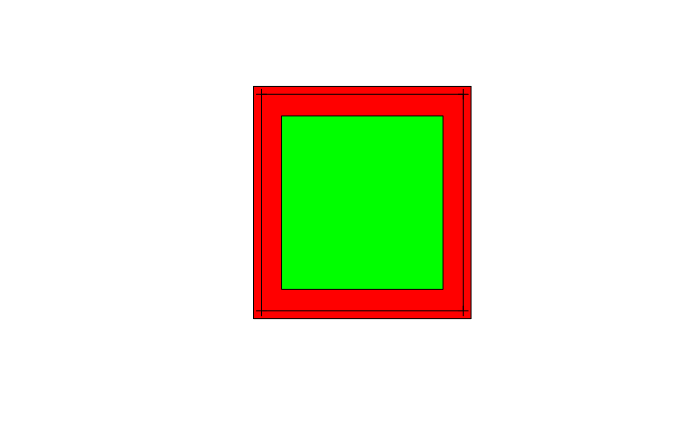
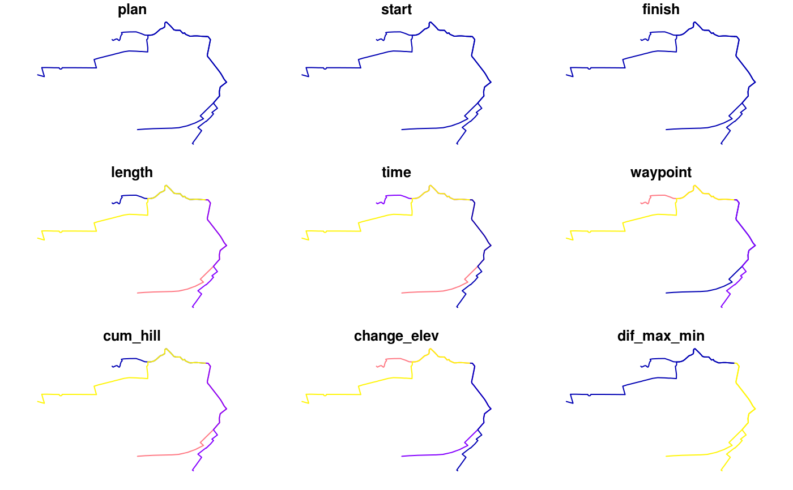

Takes a geographic object or bounding box as an input and outputs a bounding box, represented as a bounding box, corner points or rectangular polygon.
geo_bb(shp, scale_factor = 1, distance = 0, output = c("polygon", "points", "bb"))
Arguments
| shp | Spatial object (from sf or sp packages) |
|---|---|
| scale_factor | Numeric vector determining how much the bounding box will grow or shrink. Two numbers refer to extending the bounding box in x and y dimensions, respectively. If the value is 1, the output size will be the same as the input. |
| distance | Distance in metres to extend the bounding box by |
| output | Type of object returned (polygon by default) |
See also
bb_scale
Other geo: bbox_scale,
buff_geo, crs_select_aeq,
decode_gl, gclip,
geo_bb_matrix,
mapshape_available, mapshape,
quadrant, reproject
Examples
#>#># Simple features implementation: bb_sf1 <- geo_bb(routes_fast_sf, scale_factor = c(2, 1.5)) bb_sf2 <- geo_bb(routes_fast_sf, c(2, 1.5), distance = 100)#>#>plot(bb_sf1)bb_matrix <- geo_bb(routes_fast, scale_factor = c(2, 1.1), output = "bb") plot(routes_fast_sf[2:5, ], bbox = bb_matrix)#> Warning: plotting the first 9 out of 16 attributes; use max.plot = 16 to plot all#> Warning: "bbox" is not a graphical parameter#> Warning: "bbox" is not a graphical parameter#> Warning: "bbox" is not a graphical parameter#> Warning: "bbox" is not a graphical parameter#> Warning: "bbox" is not a graphical parameter#> Warning: "bbox" is not a graphical parameter#> Warning: "bbox" is not a graphical parameter#> Warning: "bbox" is not a graphical parameter#> Warning: "bbox" is not a graphical parameter#> Warning: "bbox" is not a graphical parameter#> Warning: "bbox" is not a graphical parameter#> Warning: "bbox" is not a graphical parameter#> Warning: "bbox" is not a graphical parameter#> Warning: "bbox" is not a graphical parameter#> Warning: "bbox" is not a graphical parameter#> Warning: "bbox" is not a graphical parameter#> Warning: "bbox" is not a graphical parameter#> Warning: "bbox" is not a graphical parameter